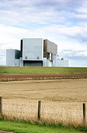

Torness nuclear power station is a nuclear power station located approximately 30 miles (50 km) east of Edinburgh at Torness Point near Dunbar in East Lothian, Scotland. It was the last of the United Kingdom's second generation nuclear power plants to be commissioned. Construction of this facility began in 1980 for the then South of Scotland Electricity Board (SSEB) and it was commissioned in 1988. It is a local landmark, highly visible from the A1 trunk road and East Coast Main Line railway. The power station is expected to be shut down in 2028, prior to defueling and then decommissioning.
Torness Nuclear Power Station Wikipedia